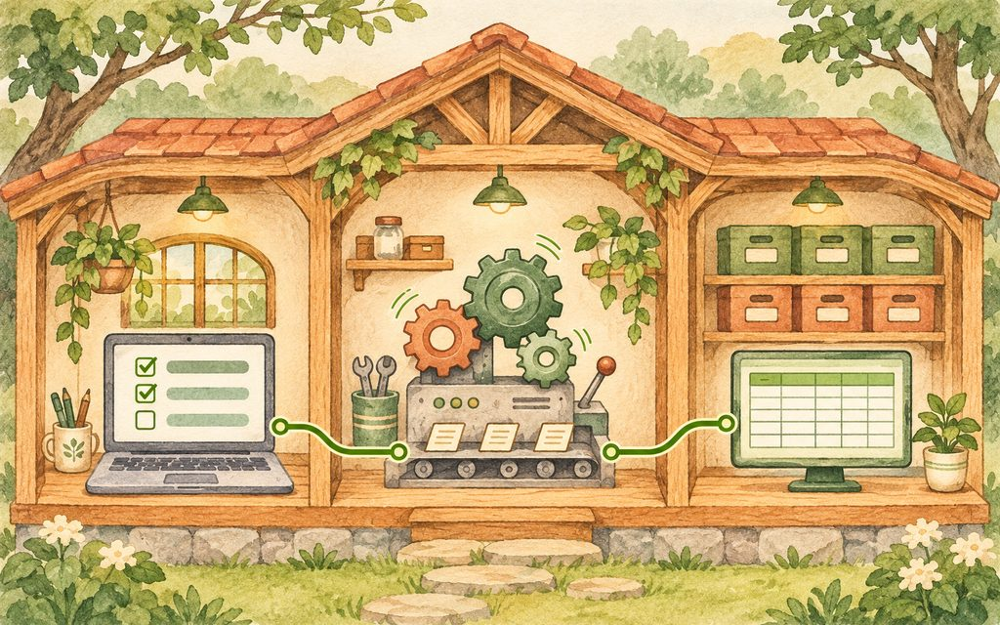

세상에 없는 함수를
하나 만들어 봅니다
앱스 스크립트는 구글 도구에 코드를 붙여, 반복 작업을 자동으로 처리하도록 돕는 도구입니다.
우리가 쓰는 시트에는 이미 합계를 구하는 SUM 같은 함수가 있습니다. 여기에 ‘숫자를 한글로 읽어 주는 함수’처럼 내 업무에 필요한 함수를 새로 만들 수 있습니다. 시트의 확장 프로그램 › 앱스 스크립트를 누르면 코드를 넣는 편집기가 열립니다.
구글 앱스 스크립트에서 숫자를 넣으면 한글로 읽어 주는 함수를 만들어 주세요. 함수 이름은 READ_KO로 해 주세요.
예: 1234 → 천이백삼십사, 10000 → 만, 0 → 영.
어디에 코드를 붙이고 어떻게 쓰는지도 설명해 주세요.
원하는 결과의 예시를 두세 개 붙이면 AI가 의도를 더 잘 이해합니다. 받은 코드를 편집기에 붙여 넣고 저장한 뒤, 시트 셀에 =READ_KO(1234)처럼 적습니다. 실제로는 AI가 만든 코드의 함수 이름을 사용하시면 됩니다. SUM을 쓰던 자리에 내가 만든 함수를 넣는 셈입니다.
이렇게 붙인 함수는 그 스프레드시트 파일 안에서만 쓸 수 있습니다. 같은 파일의 다른 탭에서는 쓸 수 있지만, 다른 스프레드시트 파일에 자동으로 생기지는 않습니다.
이 페이지 안에서만 작동하는 함수 흉내입니다. 0부터 9999까지의 정수를 입력해 보세요.
이름만 바꿔서,
여러 명에게 메일 보내기
메일 머지는 공통된 글에 받는 사람의 정보를 끼워 넣어 여러 명에게 보내는 일입니다. ‘목록’ 시트에는 이름·이메일을, ‘양식’ 시트에는 제목·내용을 적습니다. 바뀔 자리는 {이름}처럼 평소 잘 쓰지 않는 기호로 표시합니다.
| 이름 | 이메일 |
|---|---|
| 회원 1 | member1@example.invalid |
| 회원 2 | member2@example.invalid |
| 제목 | 교육 일정 안내 |
|---|---|
| 내용 | {이름}님, 교육 일정을 안내드립니다. |
두 시트를 각각 화면 캡처해서 AI에게 주면 열과 셀의 구조를 알아듣는 데 도움이 됩니다. “메뉴에 메일 발송 버튼도 만들어 주세요”라고 함께 부탁하세요. 받은 코드는 기존 코드 아래에 붙이거나, 편집기 왼쪽의 ＋ › 스크립트로 새 파일을 만들어 넣습니다. 같은 프로젝트 안의 .gs 파일 이름은 자유롭게 지어도 됩니다.
저장 후 시트를 새로 고치면 메뉴가 나타납니다. 처음 발송 기능을 실행할 때는 필요한 권한을 허락하고, 보낸 메일과 받은 메일이 모두 맞는지 확인합니다.
한 명에게 보내는 코드와 목록을 반복하며 여러 명에게 보내는 코드는 다릅니다. 두 명에게 각각 맞게 보내지는지 확인해야 반복 발송 구조를 검증할 수 있습니다.
“두 개를 하면 그러면 100개도 된다는 뜻이에요.”강의 중 · 두 사람으로 반복 처리 구조를 시험하라는 뜻입니다.
실제 발송 가능한 양은 계정과 서비스의 제한도 받으므로, 두 명의 성공만으로 대량 발송까지 보장되는 것은 아닙니다.
실제 메일은 보내지 않습니다. 두 사람에게 이름이 각각 들어가는지 확인해 보세요.
앱은 세 부분으로 생각하세요
앱에서 내용을 적고 엔터나 저장 버튼을 누르면, 화면 뒤에서 요청을 처리하고 기록을 남깁니다. 어려운 용어를 외우기보다 보이는 곳 → 처리하는 곳 → 쌓이는 곳으로 기억해 보세요.
index.html프론트엔드입니다. 내 눈에 보이는 입력칸·버튼·달력과 디자인을 담습니다.
code.gs백엔드입니다. 화면의 요청을 받아 저장·조회·발송 같은 일을 처리합니다.
구글 시트회원 목록이나 할 일처럼 업무 기록이 차곡차곡 쌓이는 곳입니다.
이 강의의 앱스 스크립트 앱에서는 code.gs가 서버, index.html이 화면, 시트가 데이터베이스 역할을 합니다. 화면 디자인만 바꾼다면 index.html만 고치면 됩니다. 기록을 저장하는 방식이나 시트의 열을 바꿀 때는 연결된 서버 코드도 함께 살펴야 합니다.

할 일 앱을 만들고
웹 주소로 열어 보세요
구글 앱스 스크립트로 할 일 앱을 만들어 주세요. code.gs와 index.html 두 파일만 사용해 주세요. 시트 열 구성과 시트 이름도 제안해 주세요. 할 일을 저장하고 목록을 불러오는 기능을 넣고, 처음 설정하는 순서도 알려 주세요.
두 파일만 달라는 이유는 복사하고 붙여 넣는 횟수를 줄이기 위해서입니다. AI가 제안한 열 이름을 시트 첫 줄에 붙이고, 시트 탭 이름도 코드에서 찾는 이름과 똑같이 맞춥니다. 예를 들면 ‘할일’ 시트에 ‘등록일 / 할 일 / 마감일 / 완료 여부’ 열을 준비할 수 있습니다.
- 서버 코드를 넣습니다.
code.gs에 받은 서버 코드를 붙입니다. - 화면 파일을 만듭니다. 편집기 왼쪽 ＋ › HTML로
index파일을 만들고 화면 코드를 붙입니다. 편집기에는index.html로 표시됩니다. - 파일 이름을 맞춥니다. 서버 코드가
'index'를 불러온다면 HTML 이름도index여야 합니다. 대소문자까지 확인하세요. - 배포해서 주소를 받습니다. 배포 › 새 배포 › 웹 앱에서 실행 계정과 사용할 사람의 범위를 확인하고 배포합니다.
- 반드시 한 건 저장합니다. 주소에서 할 일을 저장한 뒤, 실제 시트에 한 줄이 들어오는지 확인합니다. 화면만 예쁘게 뜨는 것으로 끝내지 마세요.
접근 범위는 나만, 우리 기관, 구글에 로그인한 사람, 누구나 등 사용 목적에 맞게 고릅니다. 계정 종류와 기관의 관리 정책에 따라 보이는 선택지가 다를 수 있습니다.
해당 코드에
setup 함수가 있을 경우, 편집기 위쪽 함수 선택 목록에서 setup을 골라 실행한 뒤 다시 시도하세요. setup은 AI가 만든 초기 설정 함수 이름이며 모든 앱에 반드시 있는 것은 아닙니다.이 페이지의 흉내 화면입니다. 연습 내용은 현재 화면에만 남고 새로 고치면 사라집니다.
- 아직 저장한 할 일이 없습니다.
저장 후 목록에 새 줄이 생기는지 보세요.
처음에는 새 배포,
고친 뒤에는 배포 관리
직원들에게 이미 나눠 준 주소를 지키는 것이 중요합니다.
새 배포를 만들 때마다 새 주소가 생깁니다. 코드를 고칠 때마다 새 배포를 누르면, 이미 받은 주소를 여는 직원은 계속 옛 배포를 사용하게 됩니다. 처음 한 번은 ‘새 배포’, 그다음부터는 배포 관리 › 기존 배포 선택 › 연필 › 새 버전 › 배포를 사용하세요. 같은 주소에서 내용이 바뀝니다.
“이거를 모르면 진짜 노가다 덩어리를 하루 종일 하실 거예요.”강의 중 · 기존 주소를 유지하는 배포 관리의 중요성
사이트 도구에서 ‘미리 보기’와 ‘게시’를 구분하는 것과 비슷합니다. 고치는 동안은 테스트 배포에서 보고, 다 되면 기존 배포의 버전을 바꿔 정식 화면에 반영합니다.
한 번에 완벽한 앱은 없습니다
에러를 고치는 것도, 디자인을 바꾸는 것도, 기능을 더하는 것도 모두 개선입니다. AI에게 “여름·가을 테마를 고르는 버튼을 추가해 주세요”, “할 일을 달력 방식으로 보고 싶어요”처럼 구체적으로 말해 보세요.
테마 같은 디자인 변경은 화면 파일인 index.html만 바뀌고, 서버 code.gs와 시트 구조는 그대로일 수 있습니다. 달력에 새 정보를 저장하는 기능까지 추가한다면 다른 부분도 바뀔 수 있으니 AI에게 변경할 파일을 함께 설명해 달라고 하세요.
AI가 “이 부분만 바꾸세요”라고 줬는데 찾아 바꿀 자신이 없다면, “수정 내용을 반영해서 해당 파일을 처음부터 끝까지 다 만들어 주세요”라고 부탁하시면 됩니다. 전체 코드를 바꾼 뒤에는 기존 기능도 다시 눌러 보세요.
고친 화면은 끝이 dev인 테스트 배포에서 확인하고, 다 되면 배포 관리 › 연필 › 새 버전으로 직원들이 쓰는 exec 주소에 반영합니다.
“한 번에 완벽한 기능 만드는 건 불가능해요. 계속 개선하면서 고치는 거예요.”강의 중 · 작은 개선을 반복하는 태도
여럿이 쓰는 앱에는
공통 규칙이 필요합니다
혼자 쓰는 앱은 나에게 편하면 되지만, 직원 모두가 쓰는 앱은 각자 편한 방식이 다릅니다. 팀마다 다른 규칙으로 실적을 모으면 앱을 만들어도 모아서 쓰기 어렵습니다. 중간 관리자가 기록 기준과 업무 규칙을 정하는 일이 먼저입니다. 이것은 기술보다 행정의 일입니다.
그다음은 관리자 설정 화면입니다. 대부분의 직원에게는 기본 기능만 보여 주고, 새벽 운행이나 외부 대여처럼 드문 경우에 필요한 기능은 설정에서 켜고 끄게 만들 수 있습니다.
관리자 설정의 작동 방식을 보여 주는 연습입니다.
모든 예외를 첫 화면에 넣기보다, 모두가 지켜야 할 규칙과 일부 업무에만 필요한 기능을 나눠 생각해 보세요.
무엇으로 만들지 먼저 정하세요
앱스 스크립트는 기관 안에서 쓰는 작은 업무 도구에 잘 맞고, 개인 구글 계정에서도 사용할 수 있습니다. 하지만 데이터가 많아지거나 처리할 일이 복잡해지면 느려질 수 있습니다. 모든 일을 해결하는 만능 도구는 아닙니다.
시트 함수 몇 개로 끝날 일을 큰 앱으로 만들면, 호미로 할 일을 포크레인으로 하는 셈입니다. 먼저 ‘무엇을 자동화할지’, 그다음 ‘어떤 도구로 만들지’를 정하세요.
버튼 하나로 문자와 알림톡을
목록과 양식을 합치는 메일 머지처럼, 시트에서 문자와 카카오 알림톡을 보낼 수도 있습니다. 시트의 목록을 읽고 발송 회사의 API를 호출하는 방식입니다. API는 다른 서비스에 ‘이 일을 처리해 주세요’라고 정해진 형식으로 요청하는 연결 창구라고 생각하시면 됩니다.
- 기관에서 관리하는 휴대전화 번호
개인 번호로 준비하면 담당 직원이 떠났을 때 관리가 어려워집니다. 저렴한 알뜰폰 요금제를 검토하거나, 남는 휴대전화 기기를 활용해 기관이 계속 관리할 번호를 마련하세요. - 그 번호로 준비하는 카카오톡 비즈니스 채널
알림톡을 보내려면 필요합니다. 일반 문자만 보낼 때는 필요하지 않습니다. - API를 제공하는 문자 발송 회사
‘회사이름 API’로 검색해 공식 연동 안내가 있는지 확인하세요. 문서가 있으면 연결 방법을 검토할 수 있으며, 가입과 연동 조건도 함께 확인합니다.
같은 발송 회사에서 문자와 알림톡을 골라 보낼 수 있습니다. 서비스를 선택할 때에는 발송 단가와 연결하기 쉬운 정도가 서로 다르다는 점을 기억하세요.
자유롭게 적는 문자,
틀을 먼저 정하는 알림톡
일반 문자는 알림톡 템플릿 검수 없이 그때그때 내용을 작성할 수 있습니다. 반면 알림톡은 카카오가 미리 검수한 템플릿 안에서만 보낼 수 있습니다. 받는 사람의 이름처럼 정해 둔 자리만 바꾸고, 승인된 틀을 벗어나면 발송할 수 없습니다. 무분별한 발송을 막기 위한 장치입니다.
템플릿은 넉넉히 미리 준비하세요
검수는 카카오가 하며, 보통 영업일 기준 1~3일이 걸립니다. 정해진 완료 시점을 보장하는 것은 아닙니다. 반려되면 내용을 고쳐 다시 검수를 요청해야 하므로, 실제 발송 일정에 여유를 두고 신청하세요.
공식 참고: 솔라피 · 알림톡 템플릿 검수 안내
단가와 연동 편의를 함께 보세요
아래는 강의에 사용한 2026년 10월 공식 요금표 기준의 비교입니다. 건당 가격이며 부가세는 별도입니다. 현재 계약 조건이나 연동 방식에 따라 다를 수 있으므로 도입 전 각 회사의 최신 요금 안내를 확인하세요.
| 발송 회사 | 알림톡 | 단문 문자 |
|---|---|---|
| 알리고 | 6.5원 | 8.4원 |
| 솔라피 | 13원 | 18원 |
공식 요금 확인: 알리고 문자 · 알리고 알림톡 소개서 · 솔라피 가격 정책
알림톡은 문자보다 단가가 낮은 편이지만, 가격만 보고 선택할 수는 없습니다. 내 업무에 맞는 템플릿을 승인받을 수 있는지, API 설명을 이해하고 연결하기 쉬운지도 보세요.
입금을 확인하면,
그날 안내가 가도록
회원 등록이나 회비 납부를 확인한 다음 안내 메시지를 보내는 업무도 연결할 수 있습니다. 회원 명단이 쌓이는 시트에 앱스 스크립트를 붙이고, 문자 발송 회사의 API를 연결합니다. 입금 확인이 필요하면 계좌 조회 API도 함께 사용합니다.
예를 들어 계좌 조회 API로 통장 입금을 주기적으로 확인하고, 회비가 들어온 회원에게 그날 안내가 가도록 만들 수 있습니다. 이는 입금 순간을 저절로 아는 기능이 아니라 조회 주기와 확인 절차를 정해 구현하는 시스템입니다.
팝빌 공식 요금표에는 ‘계좌조회 5,000원/월’로 안내되어 있습니다. 여러 계좌를 쓸 때의 요금은 공식 요금표에 따로 나와 있지 않으므로 팝빌에 확인하세요. 실제 API 연동에 적용되는 조건도 문의하셔야 합니다.
이런 시스템의 출발점은 기술이 아니라 업무 흐름입니다. 담당자에게 “지금 어떤 순서로 확인하시나요?”라고 자세히 물어보세요. 명단을 어디에 적는지, 입금자를 어떻게 대조하는지, 확인이 어려울 때 누가 판단하는지까지 알아야 그 순서를 앱에 옮길 수 있습니다.
자주 묻는 질문
질문을 누르면 답이 펼쳐집니다. 막혔던 지점부터 확인해 보세요.
만든 함수는 다른 시트에서도 쓸 수 있나요?
앱스 스크립트를 붙인 그 스프레드시트 파일 안에서만 쓸 수 있습니다. 같은 파일의 다른 시트 탭에서는 쓸 수 있지만, 별도의 파일에 자동으로 적용되지는 않습니다.
코드를 한 파일에 계속 이어 붙여야 하나요?
아닙니다. 편집기 왼쪽의 ＋ › 스크립트로 파일을 나눠 넣어도 됩니다. 같은 프로젝트 안에서 .gs 파일 이름은 자유롭게 지으셔도 됩니다. 다만 HTML 파일 이름은 서버 코드가 불러오는 이름과 일치해야 합니다.
누구나 쓰게 배포했는데 가끔 로그인하라고 떠요.
먼저 배포 관리에서 실제 접근 범위가 ‘누구나’인지 확인하세요. 공유한 주소가 편집자용 /dev가 아닌 정식 /exec인지도 보세요. 로그인 요구는 실행 계정 설정과 기관 정책의 영향도 받습니다. 접근 사용자의 계정으로 실행하도록 설정한 앱은 사용자 승인이 필요할 수 있으므로, 범위만 바꾸고 끝내지 말고 실제 사용자의 환경에서 확인하세요.
시트 옆 클로드 창이 앱스 스크립트 코드도 넣어 주나요?
강의에서 다룬 작업 방식에서는 시트 함수 작업과 달리, 앱스 스크립트 코드는 직접 붙여 넣습니다. 확장 프로그램 › 앱스 스크립트를 열고 받은 코드를 복사해 넣으세요. 사용하는 AI의 연동 기능은 바뀔 수 있으므로, 이 복습에서는 직접 붙여 넣는 순서를 기준으로 따라 하시면 됩니다.
제미나이 대신 이미 쓰는 유료 AI로 따라 해도 되나요?
됩니다. AI마다, 같은 AI라도 질문할 때마다 답이 조금씩 다를 수 있습니다. 받은 코드에서 어디부터 어디까지 복사해야 하는지 스스로 구분할 수 있으면 어느 AI로 해도 괜찮습니다. 헷갈리면 ‘파일별로 전체 코드를 나눠 주세요’라고 부탁해 보세요.
재미있는데 무엇을 만들어야 할지 모르겠어요.
답은 내 업무 흐름에 있습니다. 매주 손으로 옮겨 적는 일 하나부터 골라 보세요. 처음부터 완벽하게 만들기보다 열 번, 스무 번 고치며 다듬는다고 생각하시면 됩니다.
회원이 등록되거나 회비가 납부되면 카톡이 가게 할 수 있나요?
됩니다. 회원 명단이 쌓이는 시트에 ‘등록되거나 입금이 확인되면 알림톡을 보내는’ 앱스 스크립트를 붙이고 발송 회사의 API를 연결합니다. 입금은 계좌 조회 API로 확인합니다. 등록 정보가 들어오는 방식에 맞는 실행 조건, 승인된 템플릿, 발송 결과 확인까지 함께 준비해야 합니다.
카톡 알림톡도 문자처럼 보낼 수 있나요?
같은 발송 회사에서 문자와 알림톡을 골라 보낼 수 있습니다. 알림톡은 미리 검수받은 템플릿대로만 보낸다는 점이 다릅니다. 대신 단가가 문자보다 낮은 편입니다. 기관 번호와 비즈니스 채널, 승인된 템플릿도 준비하셔야 합니다.
세 문제로 확인하기
답을 고르면 바로 해설이 나옵니다. 틀려도 다른 답을 다시 눌러 보셔도 됩니다.
1. 이미 공유한 웹 앱 주소를 유지하며 수정하려면?
2. 여러 사람에게 보내는 메일 머지, 첫 연습은?
3. 알림톡 발송 전에 꼭 필요한 일은?
아직 답한 문제가 없습니다.
반복하는 일 하나를
작게 바꿔 보세요
모든 기능을 한 번에 만들 필요는 없습니다. 오늘은 내 업무에서 손으로 반복하던 일 하나를 골라, 다음 순서로 시작해 보세요.
7개 중 0개 완료 · 체크는 이 브라우저에 저장됩니다.
업무를 잘 아는 여러분이,
좋은 자동화의 출발점입니다.
이 페이지의 연습은 실제 구글 계정·메일·문자 발송 서비스와 연결되지 않습니다. 강의 뒤 정정 내용을 반영했으며, 보충 내용의 공식 참고 링크는 해당 설명 옆에 두었습니다.